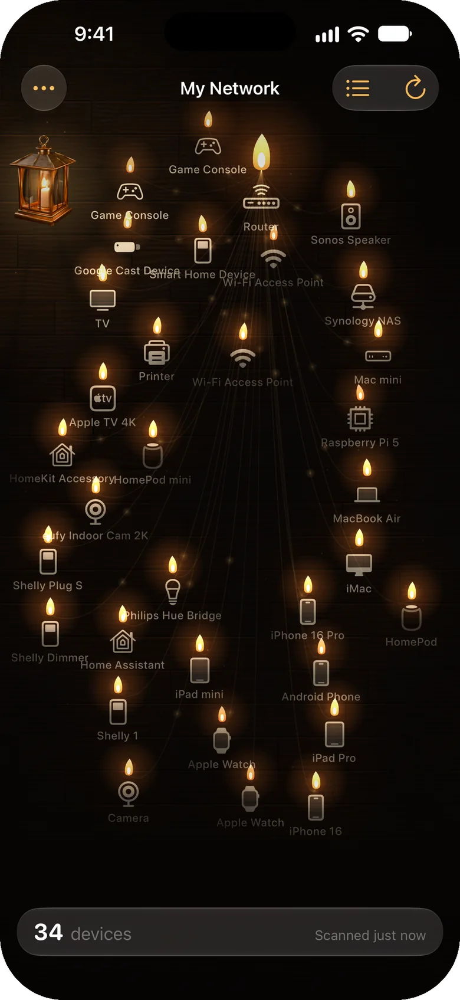
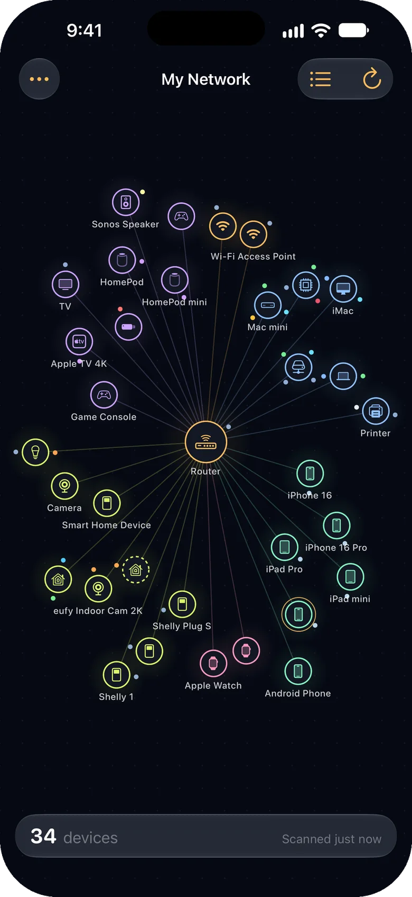
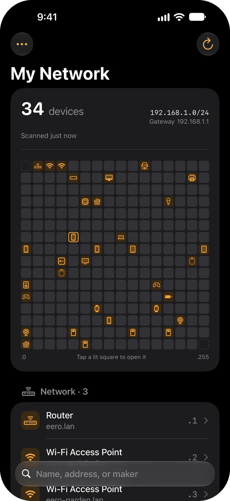
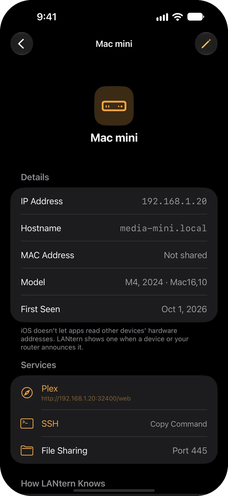
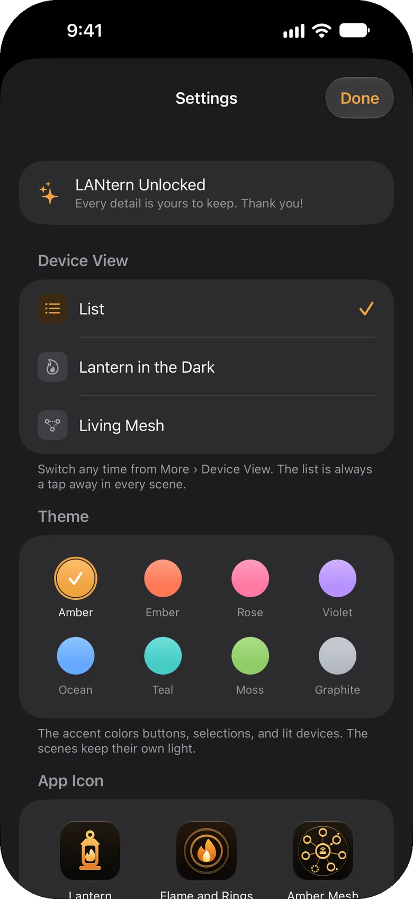
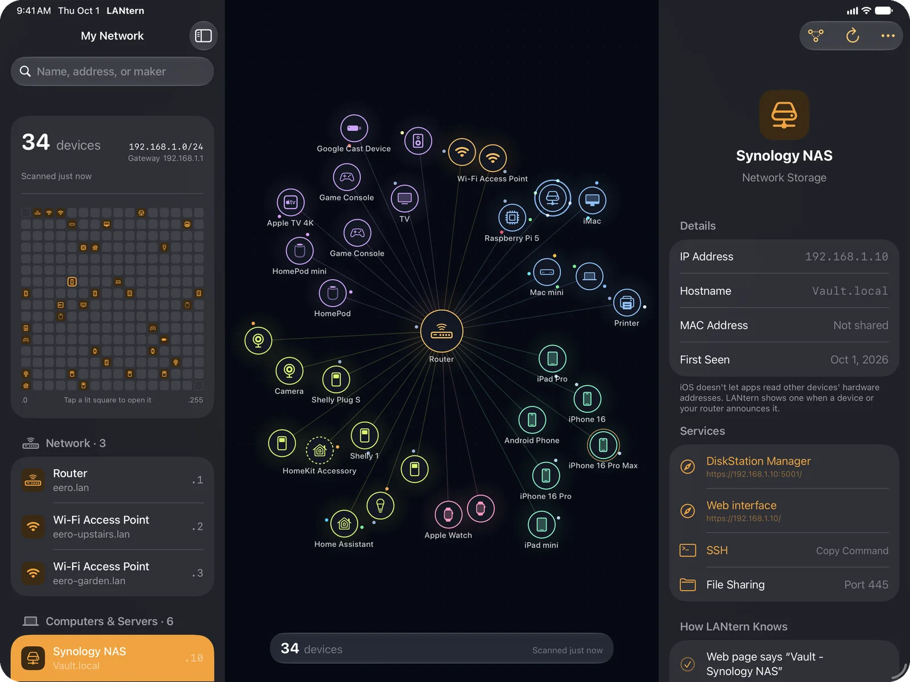

LANTERN / FOR IPHONE AND IPAD
See every device on your network.
LANtern sweeps your local network, listens for devices announcing themselves, and shows what each one is, its address and name, and how it knows.
Download on the App Store




Each device glows as a candle, labeled with what it is.
Finds what's connected
Phones, computers, TVs, cameras, printers, smart switches and more.
Shows its work
Every guess comes with the evidence behind it: ports, names, and what the device says about itself.
No account needed
Open it, tap Scan, and see what's around you. No sign-up, no setup.
Pay once
Scanning is free. One purchase unlocks every detail, theme and icon. No subscription.
ON IPAD
Everything on one screen.
The device list sits in a sidebar, with the network view in the middle and a device's details beside it.
